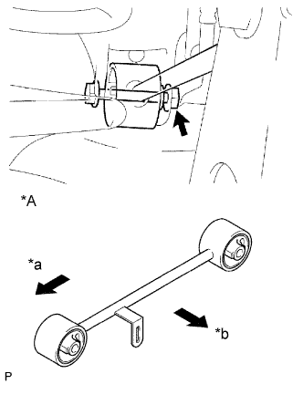
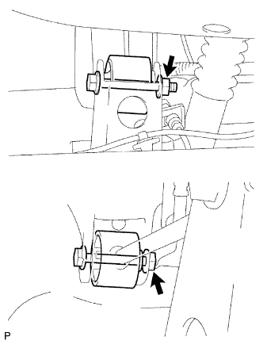

ВЕРХНИЙ РЫЧАГ ЗАДНЕЙ ПОДВЕСКИ > УСТАНОВКА |
| 1. ВРЕМЕННО ЗАКРЕПИТЕ ЛЕВЫЙ ЗАДНИЙ ВЕРХНИЙ РЫЧАГ УПРАВЛЕНИЯ В СБОРЕ |
|  |
Предварительно закрепите верхний рычаг управления в сборе и шайбу с помощью гайки и болта.
| *A | Для моделей с пневматической подвеской |
| *a | Передняя сторона |
| *b | Наружная сторона |
Предварительно закрепите верхний рычаг управления в сборе на кожухе задней полуоси с помощью гайки, шайбы и болта.
| 2. ПОДСОЕДИНИТЕ ТЯГУ ЗАДНЕГО ДАТЧИКА ВЫСОТЫ ПОДВЕСКИ (для моделей с пневматической подвеской) |
Подсоедините тягу датчика высоты подвески в сборе (Нажмите здесь).
| 3. УСТАНОВИТЕ ЗАДНЕЕ КОЛЕСО |
| 4. ДОБЕЙТЕСЬ УСТОЙЧИВОСТИ ПОДВЕСКИ |
Опустите автомобиль.
Стабилизируйте подвеску, несколько раз покачав автомобиль вверх-вниз.
| 5. ЗАКРЕПИТЕ ВЕРХНИЙ ЛЕВЫЙ РЫЧАГ УПРАВЛЕНИЯ ЗАДНЕЙ ПОДВЕСКИ В СБОРЕ |
|  |
Затяните 2 гайки.